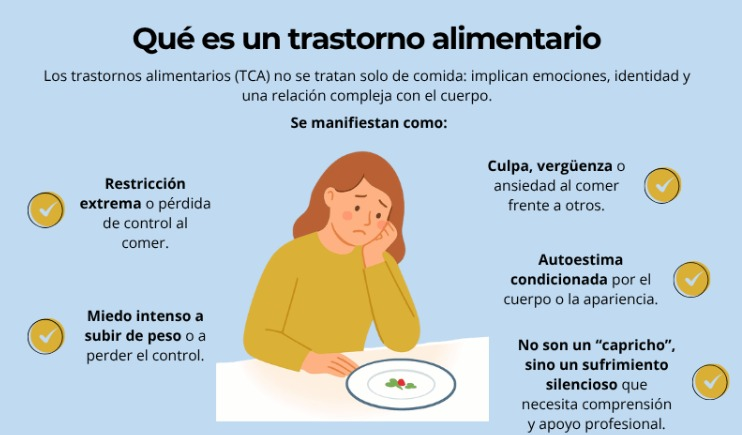
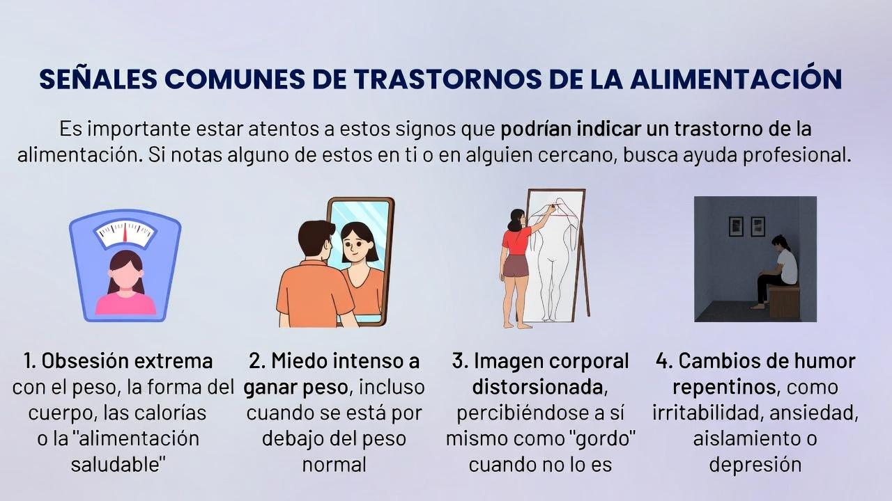
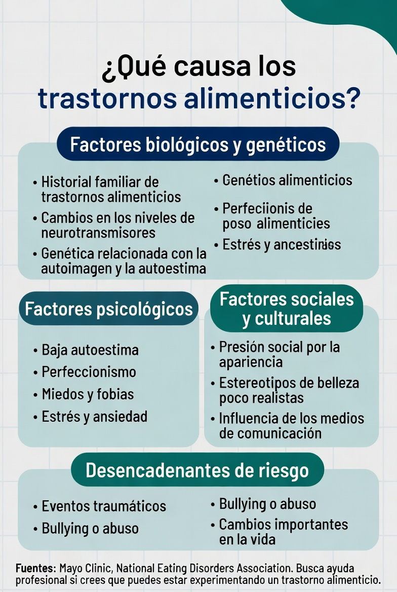

SON AFECCIONES COMPLEJAS QUE AFECTAN LA RELACIÓN CON LA COMIDA, EL PESO Y LA IMAGEN CORPORAL. SE ORIGINAN POR UNA COMBINACIÓN DE FACTORES BIOLÓGICOS, PSICOLÓGICOS Y SOCIALES. PUEDEN TENER CONSECUENCIAS GRAVES PARA LA SALUD.

Tipos Comunes de TCA
Existen varios tipos de Trastornos de Conducta Alimentaria, siendo los más frecuentes:
Anorexia Nerviosa: Restricción severa de la ingesta alimentaria, con miedo intenso a ganar peso y distorsión de la imagen corporal.
Bulimia Nerviosa: Ciclos de atracones alimentarios seguidos de comportamientos compensatorios (vómitos autoinducidos, uso de laxantes, ejercicio extremo).
Trastorno por Atracón: Consumo de grandes cantidades de comida en poco tiempo, sin realizar acciones compensatorias, acompañado de sentimientos de culpa o pérdida de control.
Otros TCA: Incluyen trastornos por evitación/restricción de la ingesta y trastornos de la imagen corporal no especificados.
Signos de Alerta
En adolescentes estudiantes —especialmente en centros como el Colegio Dolores Sucre— es fundamental reconocer los signos de alerta tempranos, ya que los años escolares son un período de cambios físicos, emocionales y sociales que pueden aumentar el riesgo de desarrollar TCA:
Signos Físicos
Cambios bruscos de peso (subidas o bajadas significativas en poco tiempo).
Debilidad, mareos o fatiga constante en clases o actividades deportivas.
Aislamiento durante horas de comida en el comedor escolar.
Uso frecuente de ropa holgada a pesar del clima, para ocultar cambios en el cuerpo.
Signos Comportamentales y Emocionales
Preocupación excesiva por el peso, la comida o la imagen corporal en conversaciones o redes sociales.
Cambios en hábitos alimentarios: evitar comidas grupales, seguir dietas restrictivas sin motivo médico, o consumir grandes cantidades de comida en secreto.
Retiro social de actividades con compañeros (salidas, eventos escolares, deportes).
Cambios de humor frecuentes: irritabilidad, tristeza o ansiedad, especialmente alrededor de temas de comida o apariencia.
Baja rendición académica debido a dificultades para concentrarse.
Importancia en el Colegio Dolores Sucre
En nuestra comunidad educativa, reconocer estos signos permite intervenir a tiempo: profesores, compañeros y familias son piezas clave para ofrecer apoyo y derivar a profesionales de la salud. La prevención y el diálogo en el ámbito escolar ayudan a reducir el estigma y a crear un entorno seguro para quienes puedan estar pasando por dificultades.

CAUSAS Y FACTORES DE RIESGO
Los TCA no tienen una única causa: surgen de la interacción de múltiples factores que varían según cada persona:
Factores Biológicos
Predisposición genética (historial familiar de TCA o trastornos mentales).
Desequilibrios en neurotransmisores del cerebro (como la serotonina, relacionada con el estado de ánimo y la saciedad).
Cambios hormonales (durante la pubertad, embarazo o períodos de estrés físico).
Factores Psicológicos
Alta perfeccionismo o autocrítica.
Baja autoestima o distorsión de la imagen corporal.
Experiencias de trauma, ansiedad, depresión o trastornos de personalidad.
Factores Sociales y Culturales
Presión de los medios de comunicación por un ideal de belleza delgado.
Ambientes competitivos (deportes, artes escénicas o modelos, donde se valora la apariencia física).
Relaciones familiares conflictivas o falta de apoyo emocional.

¿Dónde Buscar Ayuda?
Si eres estudiante y sientes que tienes dificultades con tu relación con la comida, o conoces a algún compañero/a del colegio que muestre señales de preocupación, no estás solo y no debes callarlo. Muchos adolescentes piensan que es un problema que deben resolver solos, pero la verdad es que la alimentación y la salud emocional son temas que merecen apoyo — y en Guayaquil y todo Ecuador hay recursos pensados especialmente para jóvenes como tú.
Centros de Atención en Guayaquil (Provincia del Guayas)
Hospital Eugenio Espejo - Unidad de Trastornos de Conducta Alimentaria: Atención especializada para adolescentes y jóvenes. Cuenta con equipo multidisciplinario (psicólogos, psiquiatras, nutricionistas).
📞 Llamar al (04) 232-5000 (extensión 1234)
⏰ Horarios: Lunes a viernes de 8:00 a 16:00 horas
Centro de Salud Mental "Dr. Alfredo Pareja Diezcanseco": Ofrece consultas gratuitas para estudiantes de colegios públicos y privados. Programa de apoyo grupal para adolescentes con dificultades alimentarias.
📞 Llamar al (04) 256-8900 📍 Dirección: Av. 6 de Diciembre y Av. América
Espacio de Apoyo Psicológico (EAP) - Guayaquil: Consultorios especializados en TCA para adolescentes, con flexibilidad de horarios después del colegio.
📞 Llamar al (04) 287-6540 📍 Dirección: Calle 9 de Octubre N° 123-45
Unidades de Nutrición y Salud Adolescente en colegios: Muchos centros educativos (incluyendo el Colegio Dolores Sucre) cuentan con nutricionistas y psicólogos escolares que pueden ofrecer la primera orientación y derivarte a especialistas si es necesario.
💬 Consulta con la secretaría del colegio o habla directamente con tu tutor/a.
Recursos Nacionales
Ministerio de Salud Pública - Línea de Ayuda Psicológica Gratuita: Disponible las 24 horas, 7 días a la semana, con atención en español y quechua. Ideal para hablar en privado si no tienes con quién contar:
📞 Llamar al 1800-10-1010
Red de Atención a Trastornos de Conducta Alimentaria (RATCA) Ecuador: Plataforma con guías para estudiantes y profesores, además de directorio nacional de especialistas.
🌐 Sitio web oficial: www.ratca.ec
Asociación Ecuatoriana de Psiquiatría: Directorio de médicos especializados en TCA en todo el país, con filtro por ciudad (Guayaquil, Quito, Cuenca).
🌐 Sitio web oficial: www.aep.ec
App "Salud Adolescente EC": Aplicación móvil con información sobre TCA, test de autoevaluación y localizador de centros de ayuda cerca de ti.
📱 Descargar en Google Play | Descargar en App Store
Pasos para Pedir o Ayudar a Pedir Ayuda
🔹 Si es para ti: Habla primero con tu psicólogo escolar o un adulto de confianza (padre, madre, tío/a, profesor). Ellos te ayudarán a encontrar el recurso adecuado y acompañarte en el proceso.
🔹 Si es para un compañero/a: Acércate a él/ella con cariño y sin juzgar — dile que te preocupas y que puedes ayudarlo/a a buscar apoyo. Si notas que la situación es grave, habla con un profesor o psicólogo escolar de forma responsable (sin difundirlo por el colegio).
🔹 Recuerda: La recuperación es posible y buscar ayuda es un signo de fortaleza, no de debilidad. Los centros de atención están preparados para cuidar tu privacidad y ofrecerte el apoyo que necesitas.